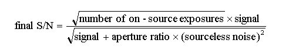
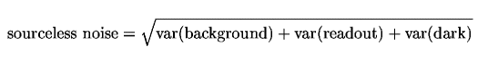
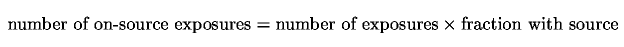

| |
Integration Time Calculator - Calculation and Analysis Methods |
There are two modes available:
As the S/N can vary markedly with wavelength, particular in the infrared, only the former mode is available for spectroscopic calculations.
The Integration Time Calculator reports the total signal and noise for a single exposure and the signal-to-noise ratio (S/N) for a single exposure and for the whole observation. In general, the theoretical S/N (reported by the ITC as the "intermediate S/N") for a single exposure is not achievable because it is necessary to perform sky or background subtraction. In practice there are many ways to achieve this subtraction depending on the fequency of sky observations, the spatal extent of the object (e.g. it may be necessary to observe separate sky frames in a crowded field or for an extended object) and the personal preference of the observer.
The ITC uses an approximation that each on-source exposure measures both signal and noise and that the process of background subtraction adds another contribution of noise. (This is a generally applicable case; it can be shown that this approximation is within 0.5 to sqrt(3) of other approaches to background subtraction). In this case the final S/N is:

where "aperture ratio" is (1 + source aperture area / sky aperture area). For some instruments the aperture ratio may be defined by the user in the ITC; in others (e.g. NIRI) it is fixed equal to unity at present. The 'sourceless noise' is defined as the (quadratic) combination of background, readout and dark current noise:

where var(background) is the square of the backgound noise (i.e. the background flux) etc. and the number of on-source exposures is:

Several examples should clarify the behaviour of this algorithm. In each case we assume that the source is faint so that the observation is (sky + telescope) backgound noise limited and set the aperture ratio to 2.
In both imaging and spectroscopy modes the signal and total noise is calculated within a software aperture optimised to yield the best S/N ratio or within an aperture specified by the user. The 'optimum' aperture differs slightly for bright and faint sources (i.e. it depends on the dominant source of noise) but an effective compromise over a wide range of source brightness is 1.18 * FWHM for imaging a point source (see the notes associated with the IRAF routine noao.astutil.ccdtime for further information). This aperture contains 61% of the total signal for the assumed Gaussian PSF. (See the more details of the default aperture used in the AO case).
In the case of a uniform surface brightness (USB) source the 'optimum' aperture simply defaults to an area of one sq arcsec. Depending on the dominant source of noise, larger apertures will typically give higher S/N in the USB case.
For spectroscopy, the equivalent length integrated along the slit that yields the best S/N ratio would be 1.4 * FWHM for a Gaussian PSF. For computational simplicity, the ITC rounds this length to an integer number of pixels.
When calculating the area enclosed by the software aperture in the imaging case, the minimum is 9 pixels.
The ITC results page reports the aperture used by the software, the fraction of the
source flux it contains and the source + background signal in the peak pixel.


Last update September 1, 2003; Phil Puxley